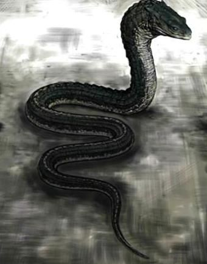
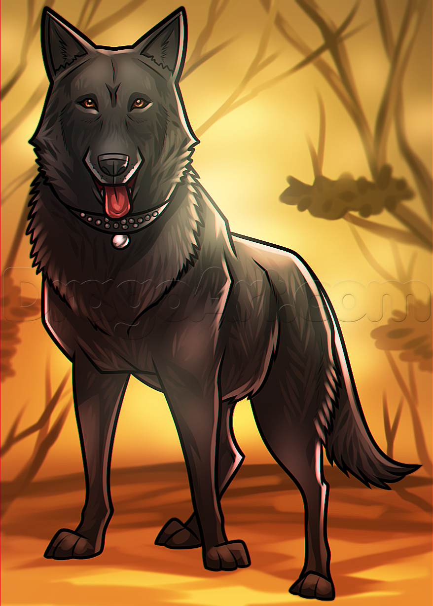
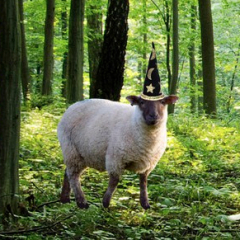
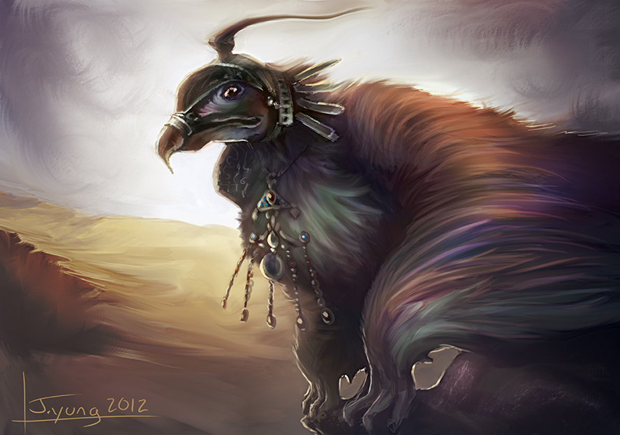
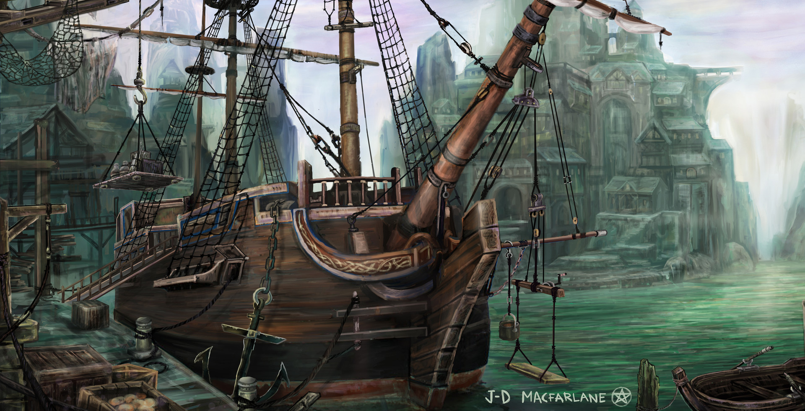
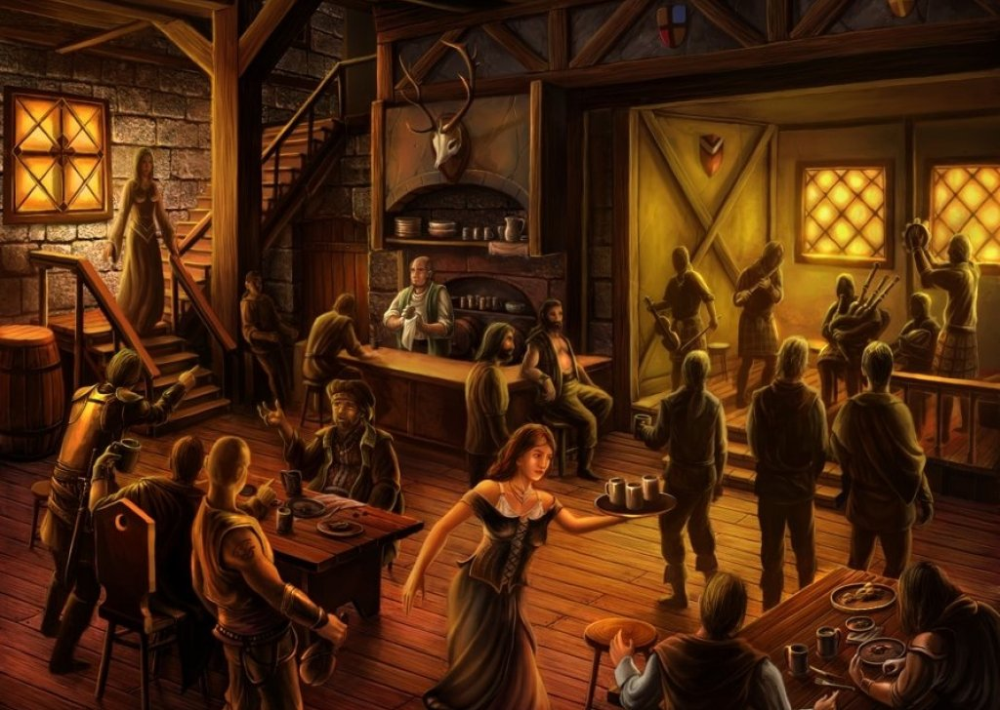
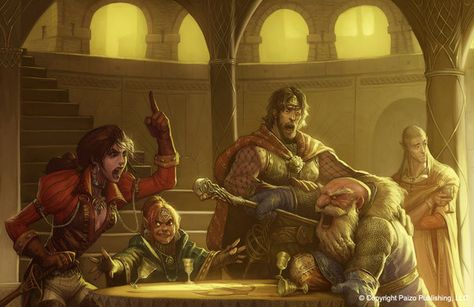
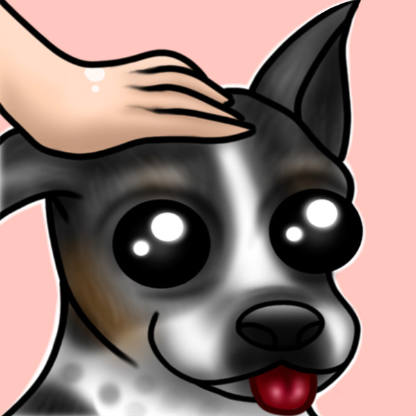
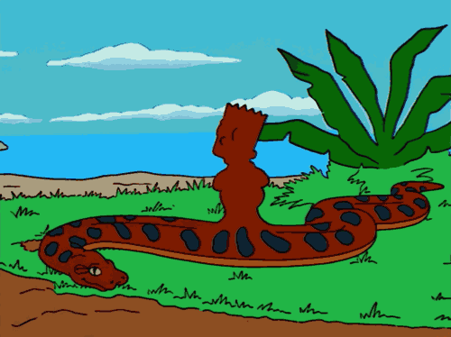
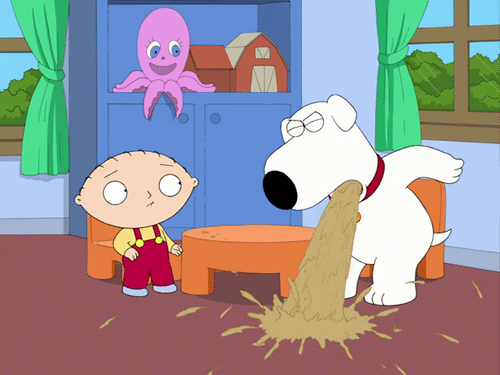

My First Expierence with DnD
My first experience at playing DnD (specifically DnD 5e), was...an odd one to say the least. I, along with a handful of other
fellow table-top nerds, would all gather in a discord server of our DMs. Here, we used the chat rooms to playout our
characters as well as the plot. It wasn't exactly ideal, but it worked well enough for everyone.

The DM would allow all participants to create whatever character they so wished as this session was to be completely homebrew,
including the plot. In other words, we had practically taken the carefully balanced rule book of DnD 5e and chucked it out a window,
nevertheless, we all still tried to keep things as balanced as possible when creating our characters and the like.
What kind of characters did we make exactly? Well....there was a giant python who was a monk, a rogue that was a hawk, and a
sheep as our priest. Yes, they were all sentient animals, but they were also magical in that they could use telepathy to wield things
and talk to people. As for me, I was going to be a dwarf ranger, but after noticing my party was going to consist of only magical animals
that talk with their minds, I just went along with it and did a quick re-work. What would have been Stalky the ranger Dwarf, had instead
been converted to Felix, the Barbarian German Shepherd.
Xol
Felix
Abby
Dolk

Now, at first, I really didn't mind this development, I thought it was an interesting twist at the time and it really could have been,
but things would soon go downhill from here. Our party was to arrive at some nameless dock aboard a ship. We didn't really seem to
have a goal in mind, we just kinda traversed the town for a bit before eventually strolling on into the towns local tavern. This is
where things start to go downhill.


The first thing our monk did was slither up to the nearest fellow and attempted to hypnotize him (after rolling a success, of course,
and, yes, that was a skill his character had) into thinking the massive serpent was instead a dazzling maiden.
She then goes on to lead the poor sailor up a flight of steps and into one of the tavern bedrooms. What comes next, I'll get back to.
While snake-face was busy with the sailor, the hawk rogue and the sheep priest would engage in a drinking contest where both parties came
out incredibly intoxicated as to be expected. It's here where things begin to get a little weird. The sheep had apparently gotten so
utterly smashed she had come to confuse our hawk boy for food. She would attempt to eat him.....and succeeded.
As for me, I just sat in a corner getting free head pats while observing the odd display before me. After this, the guy who'd been
playing the feathery-rogue would end up getting pissed. He would go on to argue with both the DM and the guy playing the sheep, stating
that his character was going to have to end up leaving the party (he does get out later) after being devoured by the priest sheep as
it would be downright to humiliating for him to stick around. Apparently, our hawk-boy was a sensitive butterfly who's self-esteem
was rather short. We didn't know it would be that drastic nor knew he would end up getting so mad about it.


After getting him to chill (which doesn't last, unfortunately), I decided to see what snake-face was up to with that sailor. No surprise,
after my character peers into the room the only person present was the giant serpent, who now had obtained a new human-shaped lump in
the middle of their body having clearly swallowed up that unfortunate sea lad. Though, she hadn't planned to digest him. Apparently, the
python was just being playful and had devoured the guy just to keep herself full for a bit as well as humor herself. Eventually, she does
release him, leaving him as a dizzy mess on the ground.

Back to the other two, the sheep does eventually puke up the bird rogue and this results in further quarreling irl(in real life), with the
guy playing the rogue hating on the guy playing the priest for mortifying his character (this, by far, was the dumbest argument I've ever seen). Both him and the DM try to reason that his rogue
doesn't have to leave the party and just kiss and makeup, but this jackass was so set in making his rogue as legitimate as possible in
their personality that he just couldn't bring himself to let that happen as it "didn't fit his character".

Ultimately, the rogue does end up leaving and the guy continues to complain, stating that somehow the priest player is to take responsibility for his character.
I have no idea how that was supposed to work, but he apparently viewed the priest players pleads to reason with him as trying shrug off
taking responsibility, even though priest-guy was trying to fix the problem as best he can and even suggested simply red-conning, which
the DM would allow. But, no, the guy just continues to nag on until the DM told him to fuck off (pardon my french here).
Sadly, we did not maintain the session after that.